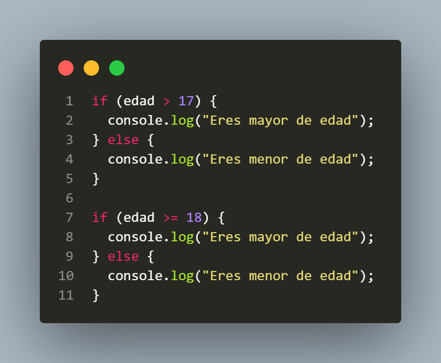
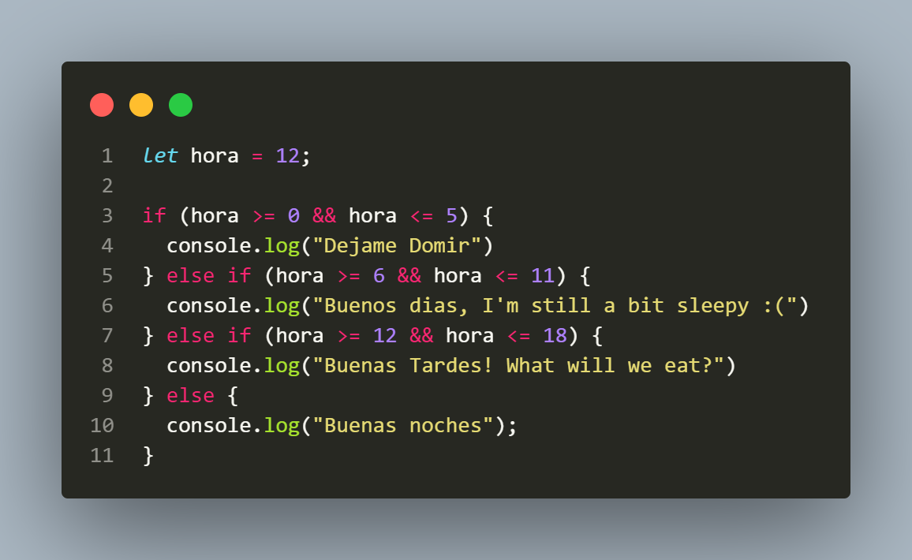
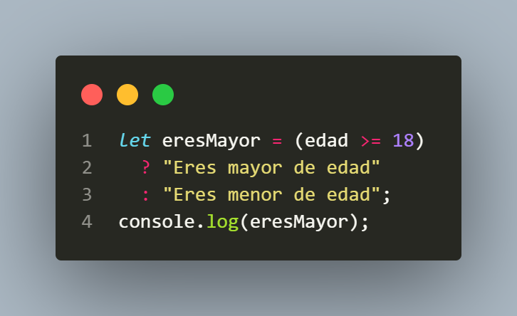
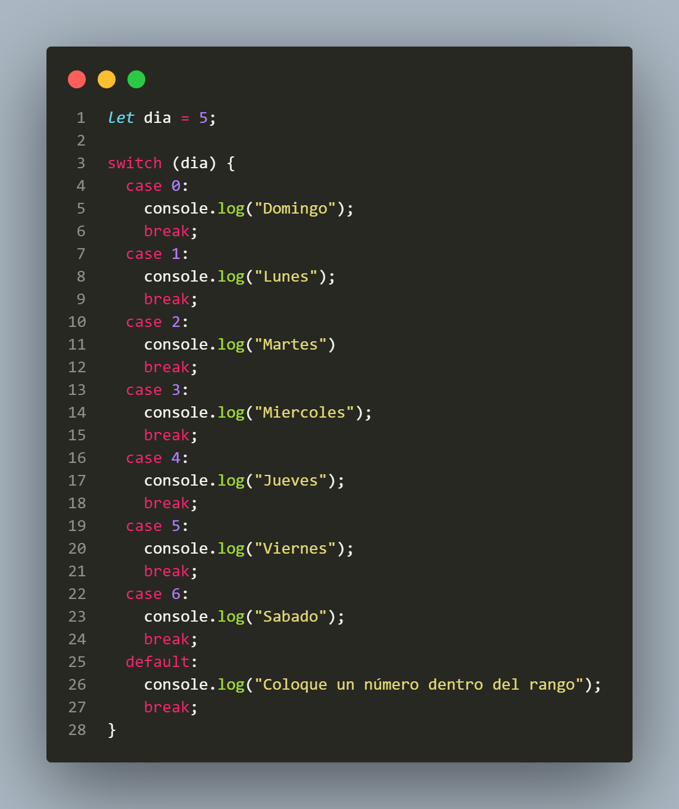

En JavaScript, if-else es una estructura de control que se usa para tomar decisiones en el código. La declaración "if" evalúa una condición: si es verdadera, ejecuta el bloque de código dentro de ella; si es falsa, ejecuta el bloque dentro de "else" (si existe). Esto permite que el programa realice diferentes acciones según la situación. Por ejemplo:
Podemos alternar entre Operadores segun sea necesario
En JavaScript, if - else if - else es una estructura de control que permite evaluar múltiples condiciones de manera secuencial. La sentencia "if" verifica la primera condición, si es verdadera, se ejecuta su bloque de código. Si es falsa, pasa a evaluar la siguiente condición con "else if". Si ninguna de las condiciones anteriores es verdadera, entonces el bloque de "else" se ejecuta como última opción.
Dejame domir 0hrs - 5hrs
Buenos dias 6hr - 11hr
Buenas Tardes 12hrs - 18hrs
Buenas noches 19hrs - 23hrs

El operador ternario en JavaScript es una forma simplificada de escribir una declaración if-else en una sola línea. Se usa para evaluar una condición y devolver uno de dos valores dependiendo de si la condición es verdadera o falsa. se utiliza con el signo (" ? ")
Aunque es de "una sola linea" al colocar 2 caminos "Largos" no hara muy legible el código en una sola linea por lo tanto la buena practica sugiere usar esta sintaxis. (Dividir el código)
El switch-case en JavaScript es una estructura de control que se utiliza para tomar decisiones múltiples de manera más organizada cuando hay varias opciones posibles. En lugar de usar múltiples if-else if, switch compara el valor de una variable o expresión con diferentes casos y ejecuta el bloque de código correspondiente. Si no se encuentra coincidencia, se puede usar default para manejar el caso por defecto.
Domingo - 0
Lunes - 1
Martes - 2
Miercoles - 3
Jueves - 4
Viernes - 5
Sabado - 6
